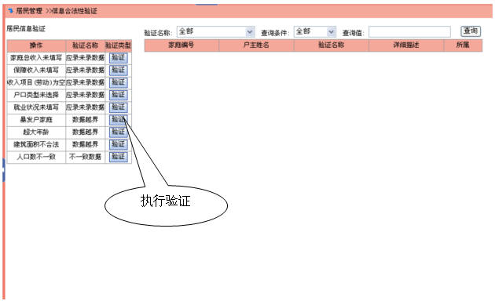
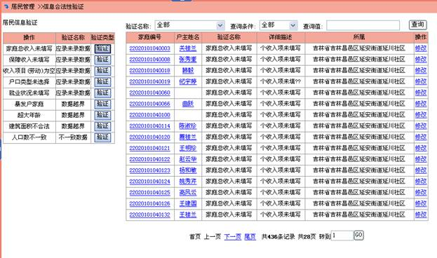

信息合法性验证
本项功能用于帮助数据维护人员对不合理的信息、漏填信息、误填信息进行检验，保证家庭信息的准确。
选择菜单“居民管理>>信息合法性验证”,进入信息合法性验证页面，如下图所示

左侧为“验证类型列表”，可以选择相应的项目进行验证，在右侧可以查询没有通过验证的记录。
选择要验证的信息类型，执行验证，提示“确定执行验证”，点击“确定”，在列表中显示出未通过验证的家庭，如下所示

如果当前操作人员有“维护家庭”操作的权限，可以点击“修改”，进入家庭维护部分。
居民数据库功能使用说明